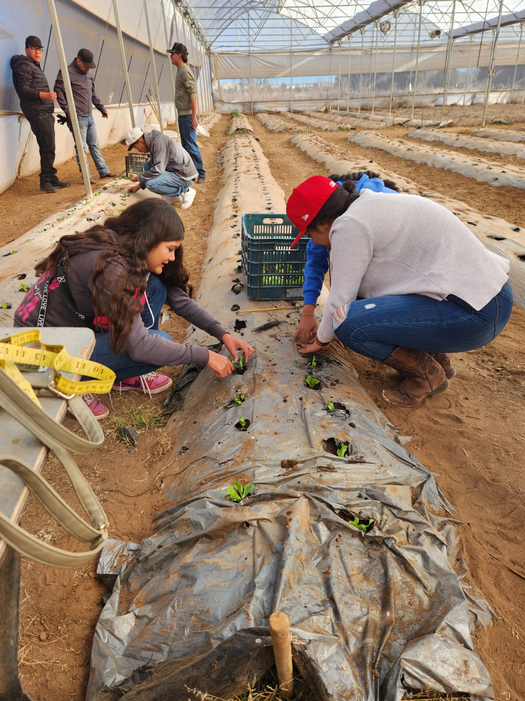

Los estudiantes adquieren conocimientos en el manejo y producción de cultivos, aplicando técnicas modernas y sostenibles para optimizar el rendimiento agrícola.
Al egresar, pueden desempeñarse en la producción agrícola, gestión de invernaderos y asesoría técnica en el sector agropecuario.
 ⬅ Volver